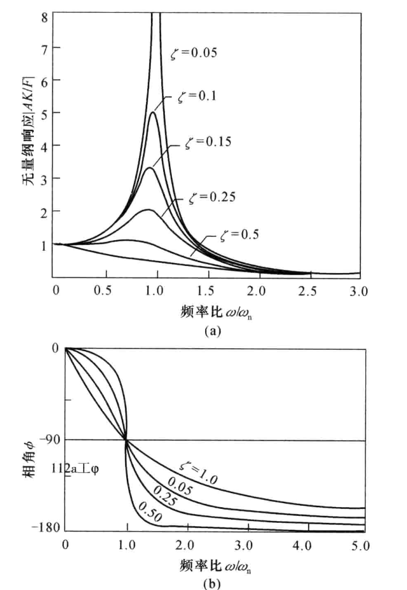

机械振动
1. 振动的阻抗表示
机械输入阻抗为输入力复幅值与驱动点速度之比。
1.1 无阻尼系统
对于单惯量无阻尼系统：
令：，
那么：，
则输入阻抗为：
令：
那么：
联立得到：
其中为无量纲（归一化）位移，为无量纲（归一化）输入频率。
1.2 有阻尼系统
对于单惯量有阻尼系统：
令：，
那么：，l
则输入阻抗为：
令
联立得到：
其中为无量纲（归一化）位移，为无量纲（归一化）输入频率。
有阻尼系统位移是复数，幅值表示最大振幅，相角表示与输入力的相位差。

2. 闭环控制
其中D和E分别是控制力输入矩阵和外部扰动力矩阵。
M，C，K是nXn维矩阵，D是nXm维矩阵，E是nXr维矩阵。
认为控制输入是位移，速度，外力的线性组合：
其中可以是时变的。
系统闭环控制就是通过输入改变系统的阻尼和刚度。
3. 状态空间方程
令：
其中：，，
这就是系统状态空间方程的形式。
4. 最优控制
取惩罚函数为：
其中Q为半正定矩阵，R为正定矩阵。
拉格朗日方程：
令
对J取一阶变分：，当做常值，
将 项进行分部积分：
设，要使得:
得到最终结果：
4.1 闭环控制（LQR）
令：
当时：
即为控制增益。
若，此时并不是最优解，需要结合前馈。在结构控制中一般在过程中不变，只在快结束时快速下降。因此可以简化为常数矩阵：
原状态空间方程变为：
由开环的矩阵变为闭环矩阵。
4.1.1 状态观测
这种控制方式需要了解全部的状态，实际很少能测得全部的状态:
其中是测量噪声。需要进行状态估测得到。当信噪比足够高时使用Luenberger观测器，否则使用Kalman滤波器：
其中如果使用Luenberger观测器设计就是一个常数矩阵，如果使用Kalman滤波器是一个时变矩阵，需要通过解另一个Riccati方程实时计算，计算量比较大。
4.2 闭开环控制和开环控制
如果能够测得外部力，那么可以更好地控制。
令：
$P(t)$部分依然按照前述处理，剩余部分：
由于依赖于无法预先得知，因此无法计算最优前馈。
5. 极点配置
设是特征根：
可以写作：
因为特征值发生了变化，所以：
因此令：
由行列式等式：
这样就将2n维转化为m维。
对于第i个特征值，需要让的行列式为0，只需要让的第j列为0即可。
选择第j列，是一个单位列向量，只有第j个值为1：
将选择的i个向量拼起来：
即可求解G：
因此，为了获得相同的特征根G的选择不唯一。